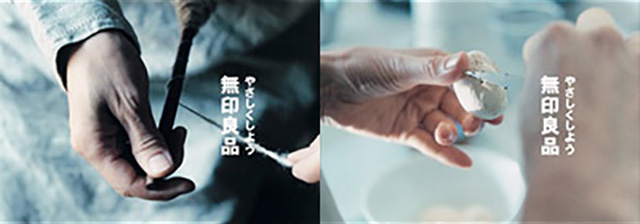
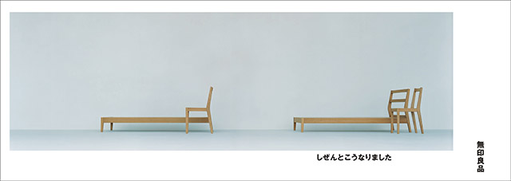
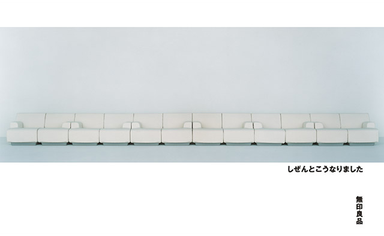

Kenya Hara
MUJI is more than simply a line of products. It is a way of thinking. “To be confident in a simplicity that feels in no way inferior to splendor.” “The simplicity that comes from stripping away frills can surpass splendor.” These concepts were advocated by graphic designer Ikko Tanaka, who was the first art director of MUJI. He then passed the torch to me. We don’t try to communicate this way of thinking by using a lot of explanation in words. Instead, we aim to communicate in a way that ensures people naturally understand these ideas when they encounter MUJI. Today, I would like to talk about several themes I have used to communicate MUJI ideas.
In this ad, we have a contemporary MUJI tea bowl placed in the Dojinsai room at Ginkaku-ji Temple. Built in the 16th century, this is said to be the first room in what is now known as the traditional Japanese style. This is an image that conveys that MUJI today embodies traditional Japanese culture, which values a simple, clean, empty, vacant aesthetic. The Japanese culture that admires clean lines and simplicity dates much further back than Western modernism, and it was in making this ad that I realized that MUJI’s roots come from this Japanese culture. We live in a global age, but it is very important to realize that there is a value deep in one’s own culture that speaks to the entire world. Being aware of this has, I believe, helped me develop a unique tone and manner for MUJI photos and expression. This isn’t simply a matter of taking a straight-on shot of a product. We let users and their particular lifestyle determine how they will use a product. With our products, you should be aware of this unique MUJI philosophy.
The second theme is “natural.” This advertising campaign is from 2008. The theme was hands. Hands at work… cooking, or spinning wool.
In my rough sketches for the ad, I focused on the incredible beauty of bare, unadorned hands at work. The copy, yasashiku shiyou, has many meanings. It can mean either being kind to someone or simplifying things. This copy is also ambiguous, and the copy can be interpreted in a number of ways.
The copy for this next corporate advertising campaign is “What happens naturally.” This is a bed and chair by product designer Naoto Fukasawa. Thinking about the meaning of a backrest, the back of a chair and a headboard would naturally take the same angle. In creating products, MUJI works toward a certain purpose and eliminates everything that is extraneous. This leads us inevitably to a natural design.
This Mold Sofa was designed for MUJI by designer Jasper Morrison. It has molded urethane cushioning inside. The ad shows a sofa unlike the conventional sofa, made using an extremely simple method. When we think of what MUJI is, our ads also need to be simple like this. That is part of our message.This was another Naoto Fukasawa idea, adopting the design of train station clocks just as they are.Masahiro Mori designed a Japanese and Western tableware series for MUJI.When you focus in like this on MUJI products, a certain tone naturally emerges. This is where we begin to create the mood for the ad or photo. MUJI stays away from trends when designing its clothing and styling its graphics and communications. The latest fads quickly become outdated. So it is vital to keep our designs just far enough away from trends that it’s not clear when they were created.